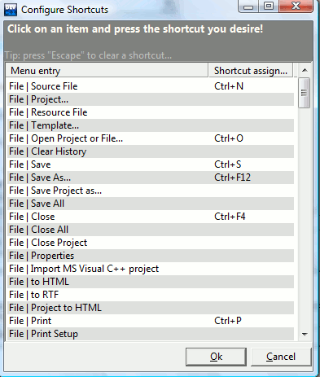

You can change the keyboard
shortcuts by going to the Tools
menu and selecting Configure Shortcuts.

Use the mouse to select the menu entry for which you wish to add or
change a shortcut.Then, type the new keyboard shortcut for that menu
entry. To delete a shortcut, hit "Esc". Press the "Ok" button
when finished.